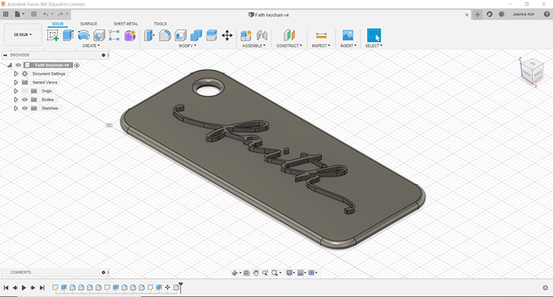

On 18 November, we were given an assignment to self learn on how to design a 3D object on Fusion360, so that we could save it as a STL file and 3D print it on the Ultimaker 2+ machine in school.

On 13 and 17 January 2020, we learnt about electronics. The lesson was pretty educational, and it was easy to understand since I had learnt Physics in secondary school before. We were taught about current flow, Ohm's law, and how the sum of all the voltages in a circuit is equal to 0. The new formula that I've learnt is : V(cc)=V(resistance)+V(LED). After a brief run through of calcultating current, resistance and voltage, we explored with Arduino stimulation. Through the stimulation, we explored how the change in resistance can affect the brightness of the LED. We were told that when working with LEDs, we need to know the current and the voltage so that we can find the suitable amount of resistance to use (using Ohm's Law). Next, we talked about switches. Switches are used everywhere, in our laptops, digital watch and mobile phones. The basic idealogy behind a switch is that when you close a switch, it closes a circuit. In a computer, we have an "input-output" board which allows us to input, as well as output information. We also learnt that any empty wire is an antenna. For switches, we need to put up a signal resistor. This way, when the switch is closed, it sends a signal.